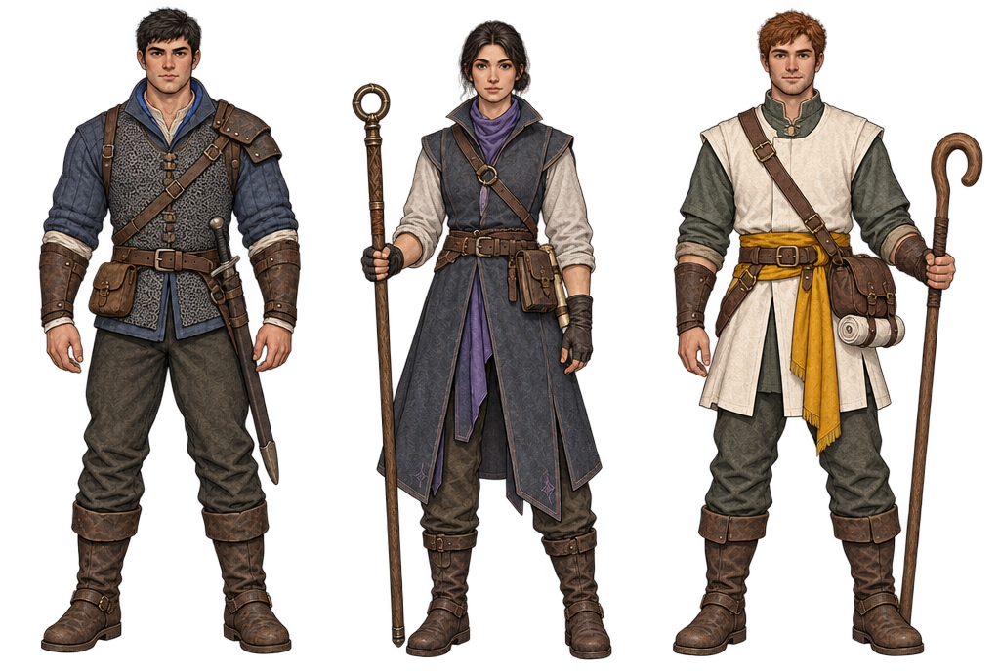

Starfall / frontier guild / reference candidates
People who look ready for the road.
Three early guild roles: clear bodies, practical equipment and a different outline from behind. These are unnamed adult role studies. They do not assign a new appearance to Aki, Ren or Yuna, or add equipment to the game.
Loading roles…
Reference illustration ≠ finished game sprite.The current game uses 16×24 people and a restrained pixel palette. These controls expose what survives reduction; they do not turn a detailed illustration into authored pixel animation. Alpha is thresholded only for display. Staff length is included in the object bounds.
Frontal lineup: check the face and attached kit.

Corrections before an approved model sheetThe first mage and cleric views turn their faces away. The swordsman's shoulder reinforcement needs a single fixed side across views. Marking, proportions and attachment points must be reconciled; a convincing illustration alone is not a ready rig.
The town these people belong to
The existing Starfall blocking mock-up below fixes its cool pine, mud, log and stone language. It is context, not a claim that these characters have been installed.

Assessment and next build handoff · Starfall's established art direction